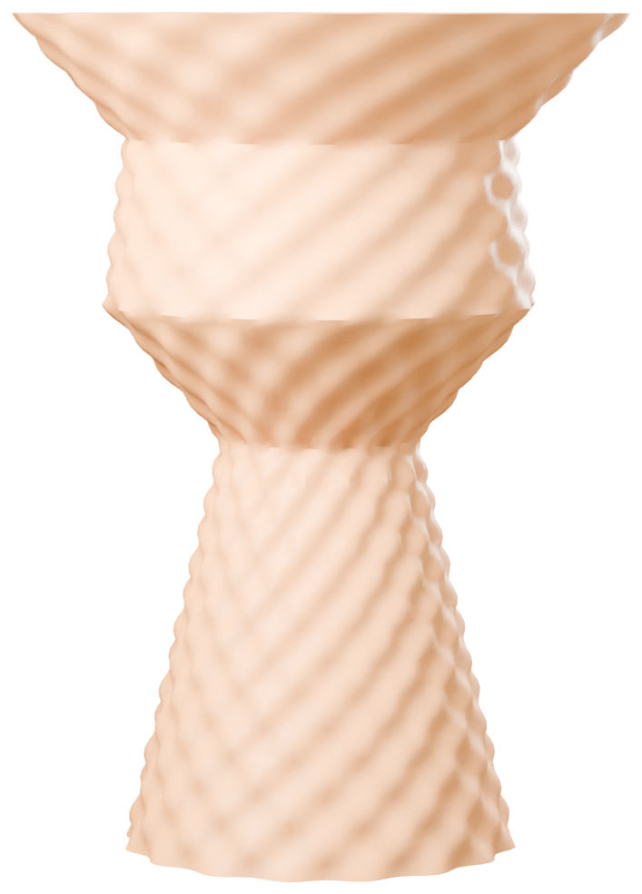

La lampe qui définit l'atelier : profil dessiné point par point, relief vrillé calculé dans la matière et non plaqué dessus, coque creuse imprimée à la commande.
Alimentation module USB 5 V (très basse tension de sécurité) : aucun raccordement au secteur, montage à la main. Le prix suit la pièce, il est recalculé sur le volume réellement imprimé. ⚠️ Cette silhouette est haute et évasée : l'angle de basculement mesuré est de 22,8°, sous le seuil de 25° que le configurateur exige pour une lampe à poser. Elle demande un lest ou une base plus large avant d'être livrée. Ouvrir le configurateur pour changer la silhouette, la surface et les cotes.